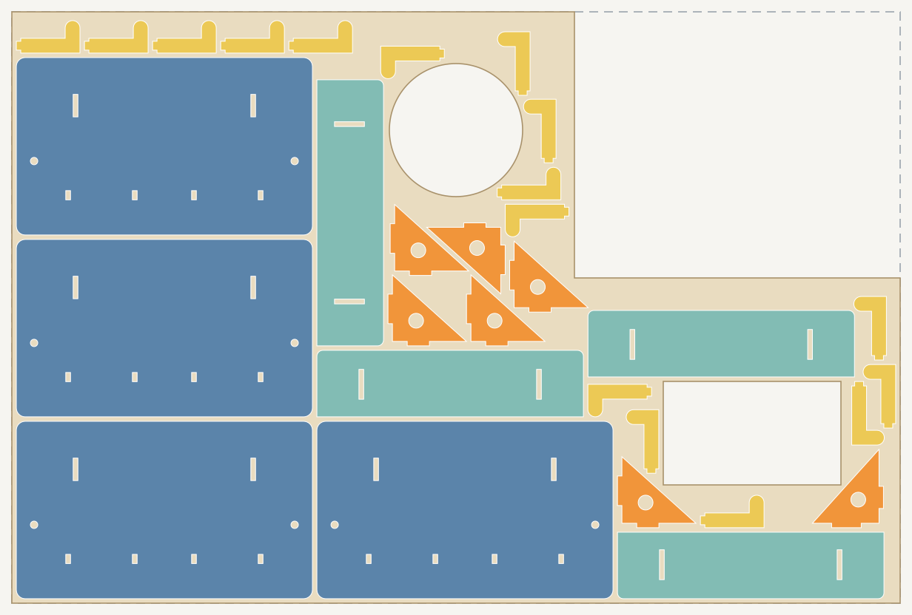
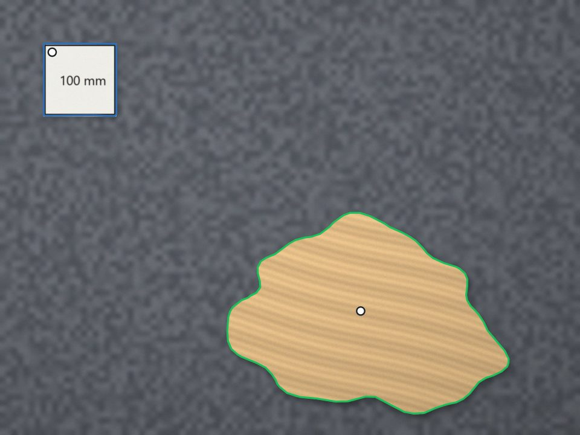
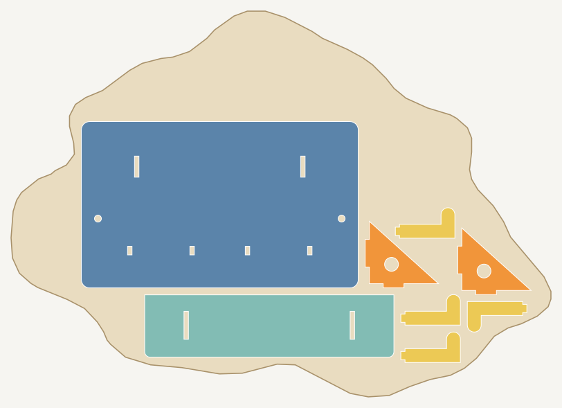

Nest parts onto a remnant or irregular offcut
To nest onto a remnant with Nestbolt (free and MIT-licensed), give it the remnant's own outline as the sheet: an SVG or DXF drawing, with holes where parts were already cut out; for a LightBurn project (a preview feature), that drawing goes next to the .lbrn2. On 2026-11-13, Nestbolt's command-line tool placed 31 of 32 parts on a partly used sheet with two holes and 8 of 8 on an offcut traced from a picture, and it nested a three-layer LightBurn project of 13 ornaments onto that traced offcut with every layer kept; Nestbolt's check passed each layout. LightBurn 2.2's docs start both True Nest and Quick Nest by drawing a rectangle as the container. LightBurn's feature board marks nesting around used areas of a sheet "Completed for v2.3", and answers a request for nesting inside other shapes with "We should have an update to nesting coming in v2.3"; its 2.3.00 Beta 2, public since 11 November 2026, lists a new nesting algorithm, FullNest, without saying what it nests into (details and sources).
We make Nestbolt. We did not run LightBurn or sparrow/studio: everything about them on this page comes from their own docs, release notes and feature board, read on 2026-11-13. Nestbolt's LightBurn support is a preview feature. Last checked: 2026-11-13.
A partly used sheet or an odd-shaped offcut is material you have already paid for. This page shows two jobs from SVG files: a partly used sheet drawn by hand, where Nestbolt places as many parts as fit, and an irregular offcut whose outline is traced from a picture with Maskbolt, an open-source image tool by the same author. That picture is a computer render made for this test, not a phone photo; see the limits. Then it shows the same steps from a LightBurn project (a preview feature).
Free and MIT-licensed; your files never leave your computer.
Mark the remnant as the sheet
Draw the outline of the material you can still use, as a closed shape in an SVG or DXF file, on a layer named SHEET (in SVG, a group with id="SHEET"). Closed shapes inside it are holes in the stock, such as places where parts were already cut out. When you import the file, Nestbolt lists that outline under sheet_outlines with an ID such as partly-used-sheet-sheet-1. A request then uses it as the sheet with {"from_import": "partly-used-sheet-sheet-1", "count": 1}; Nestbolt's import guide explains the details. The import also lists the outline itself as a part (partly-used-sheet-1), so name only the parts you want cut in the request.
In the browser app, choose the drawing under Remnant outline, or pick Imported sheet outline for a sheet size. Its Fill the sheets (most area) option is the fill_area mode used below. The numbers on this page come from the command-line tool.
Example 1: a partly used sheet, place what fits
The stock is a 600 × 400 mm sheet of 3 mm plywood. An earlier job has taken a 220 × 180 mm corner and cut out a 90 mm circle and a 120 × 70 mm rectangle. The parts are the 8-part key rack from the agent-drawn key rack example, four times over: 32 parts, which Nestbolt could not all fit on the remnant in 30 seconds. The request's mode is fill_area, which places as much part area as it can fit instead of refusing the job.
| Stock | One remnant from partly-used-sheet.svg: 600 × 400 mm minus a 220 × 180 mm corner, with two holes; 185,639 mm² of material |
|---|---|
| Parts | 4 key racks: 4 back plates, 4 shelves, 8 brackets, 16 hooks (32 parts) |
| Part spacing | 2 mm |
| Edge spacing | 3 mm, from the outline and from the holes |
| Allowed rotations | 0°, 90°, 180°, 270° |
| Mode | fill_area (place what fits) |
| Time budget | 30 seconds, repeatable mode |

Measured on 2026-10-25 with the nestbolt command-line tool built from main at 247e823, on a Windows desktop PC, and again on 2026-11-13 with a build of main at e1410185, with the same counts, utilisation and check. Nestbolt placed 31 of the 32 parts on the remnant: 4 back plates, 4 shelves, 7 of the 8 brackets and all 16 hooks, with 77.7% utilisation (placed part area divided by the material used). The independent check: valid, and a separate nestbolt validate run agreed. With the default mode, which must place every part, the same request stopped with “could not place every part in 30 s: allow more time, more sheets or fewer parts”. fill_area counts area, not complete sets, so count the sets yourself: here, three complete racks and a fourth without one bracket.

main nested it on 2026-10-25: 31 of 32 parts, check valid. The dashed line marks the original sheet edge around the corner that was already used.Example 2: an offcut traced from a rendered picture
The picture is a render of a plywood offcut lying flat on a grey bench, seen from straight above, with a 100 × 100 mm card beside it. A script drew it for these tests at exactly 0.5 mm per pixel (1600 × 1200 pixels), with wood grain, shadows, blur, noise and JPEG compression. The script also kept the true outline, so the trace can be measured against it.
- Trace the card and the offcut. The Maskbolt v0.1.0 release (Windows x64, run on the CPU) cut out the card with one click and the offcut with another, and wrote each outline as SVG. Each command took 6 to 7 seconds on this PC.
- Find the scale. The card's outline in
card.svgencloses 39,612 square pixels (Maskbolt's reply counts 39,475 mask pixels; this page uses the outline), so one pixel is 100 mm ÷ √39,612 = 0.5024 mm, 0.49% more than the true 0.5 mm. - Convert to millimetres. Every point of the offcut's outline was multiplied by 0.5024 mm, moved to start at 0, 0, and saved as one path inside
<g id="SHEET">in an SVG sized in millimetres: traced-offcut.svg, 389.9 × 278.4 mm. - Nest. One key rack (8 parts) on the traced outline, with a 5 mm edge spacing to cover the tracing error, 2 mm between parts, quarter turns and a 30-second budget in repeatable mode.


Measured on 2026-10-25 against the render's true outline: the traced shape overlaps it with an intersection over union of 0.974. Points along the traced edge are a median of 1.8 mm from the true edge, 95% are within 3.4 mm, and the largest distance is 4.3 mm. The traced area is 71,384 mm², as Nestbolt imports it, against 71,106 mm² true (0.4% more). Nestbolt, built from main at 247e823, placed 8 of 8 parts on the traced offcut with 60.0% utilisation; utilisation leaves out the unused strip above the parts, and the parts cover 50.6% of the whole offcut. The independent check: valid, and nestbolt validate agreed. A build of main at e1410185 gave the same result on 2026-11-13.

The commands
Use the v0.2.0-alpha.1 release or a build of main at e1410185: on 2026-11-13, both gave byte-identical layout files for both examples, on Windows x64. The figures above show the layouts from 2026-10-25.
Example 1, in a new folder with key-rack.svg, partly-used-sheet.svg and partly-used-sheet-request.json:

nestbolt import key-rack.svg partly-used-sheet.svg --output library.jsonfound the 8 rack parts (and listed the outline as a part too) and offered one stock outline,partly-used-sheet-sheet-1.nestbolt nest --library library.json --request partly-used-sheet-request.json --out-dir out --seconds 30 --repeatablewrotesheet-0.svgandsheet-0.dxffor cutting, withlayout.jsonandreport.json.nestbolt validate --library library.json --request partly-used-sheet-request.json --layout out/layout.jsonreported the layout valid: no overlaps, nothing outside the stock and nothing closer than 3 mm to its edges or holes.
Example 2, in another new folder with key-rack.svg, offcut-render.jpg, traced-offcut.svg and traced-offcut-request.json:

maskbolt cutout offcut-render.jpg --point 144,144 --fill-holes --out card.png --svg card.svg(the card)maskbolt cutout offcut-render.jpg --point 995,858 --out offcut.png --svg offcut.svg(the offcut)- Scale
offcut.svgintotraced-offcut.svgas described above. nestbolt import key-rack.svg traced-offcut.svg --output library.json, thennestbolt nest --library library.json --request traced-offcut-request.json --out-dir out --seconds 30 --repeatableandnestbolt validate --library library.json --request traced-offcut-request.json --layout out/layout.json.
Each nest finished in 3 to 4 seconds. In repeatable mode, the same inputs, budget and seed give the same layout on the same build and platform: two runs of each example gave identical layout files. Another build of main, or a different budget, can give a different layout. The cut files hold the parts only: the optional --sheet-outline export draws the sheet's bounding rectangle rather than the remnant's shape, so the figures above draw the remnant from its SHEET file.
On a remnant outline, Nestbolt keeps parts as far from each other as from the edge, using whichever of the two settings is larger. Both requests ask for 2 mm between parts, but the closest two parts are 3.0 mm apart in example 1 (3 mm edge spacing) and 5.0 mm apart in example 2 (5 mm edge spacing), measured on 2026-11-13 from the layouts with gaps.py (it needs Shapely). The probe runs in our LightBurn comparison's results.json (v0.2.0-alpha.1, 2026-11-02, ornament parts) agree: on the traced offcut, with 2 mm asked between parts, edge spacings of 1, 2, 3 and 5 mm gave closest gaps of 2.0, 2.0, 3.0 and 5.0 mm, while a full rectangular sheet with a 4 mm edge spacing kept the 2 mm gap. So use the smallest edge spacing your outline allows.
From a LightBurn project
Nestbolt opens LightBurn projects (.lbrn2, and legacy .lbrn) and writes an editable .lbrn2 per sheet. This is a preview feature (v0.2.0-alpha.1 and the browser app). A .lbrn2 project can't carry the remnant itself, so the outline comes from a separate SVG or DXF file.
- In LightBurn, group each part with its engraving and score lines, then save a copy of the project. Nestbolt moves each group as one piece. Text without embedded outlines must be re-saved in LightBurn or converted to paths first (preparation notes).
- Draw or trace the usable outline of the remnant, with any holes, and export only that outline as SVG or DXF.
- In the browser app, open the
.lbrn2project, set the quantities, and under the sheet size choose the outline file as Remnant outline. Set the part and edge spacing, nest, and download the LightBurn sheet. - Open the sheet in LightBurn and check it before you cut. The T1 rectangle marks the remnant's bounding box, moved to the origin, not its shape. To see the shape, import your outline file and line its bounding box up with the T1 rectangle. Check the layout whatever your laser's origin. Nestbolt's LightBurn notes record nested sheets opened in LightBurn Pro 2.1.01 with the default and a mirrored (top-right) origin in October 2026, but we did not open the sheets on this page in LightBurn.
Measured on 2026-11-13 with the same build of main (e1410185), using the three-layer ornament project (cut, engrave and score) and the requests from our LightBurn comparison. Asked for 13 ornaments on the traced offcut above (all-traced-offcut-13-request.json), Nestbolt placed all 13; asked for 11 on a 12 × 12 inch sheet with a corner and two holes already cut away (all-partly-used-11-request.json), it placed all 11. Nestbolt's check passed both sheets, and both came out byte-identical to the sheets the v0.2.0-alpha.1 release made on 2026-11-02, which passed our own layer check: every part kept its engraving and score lines, and the layer settings were unchanged. On the command line, the remnant goes in the request as outline_mm (outer ring and holes in millimetres, Y up), as in those two requests. On 2026-11-02, the live browser app placed 12 of 12 on the same offcut through the steps above. We did not open the sheets in LightBurn. The commands, data and our check script are on the comparison page.
What LightBurn and sparrow/studio do with remnants
From each tool's own pages, read on 2026-11-13. We ran neither, so this says nothing about how densely they pack.
| Tool | What it nests into | Source |
|---|---|---|
| LightBurn 2.2 True Nest (Pro) | Parts by their actual contours. The getting-started steps begin "Create a rectangle to use as a container for the shapes you want to nest". True Nest requires LightBurn Pro. | True Nest docs |
| LightBurn Quick Nest (2.1 and later) | Each part's bounding box, packed into a rectangle you draw; one of its error notes reads "Target Rectangle Must be Axis Aligned". | Quick Nest docs |
| LightBurn SVGNest (External) | Exports your graphics and "a container shape", usually one the size of your material, as an SVG and opens SVGnest.com in your browser, where you upload it. Its page doesn't say the container must be a rectangle. LightBurn's table marks it as needing the internet. | SVGNest docs |
| LightBurn 2.3 (in beta) | On its feature board, LightBurn marked a request to "avoid certain areas of an existing partially-used sheet" as "Completed for v2.3", and answered a request for nesting inside circles and other shapes with "We should have an update to nesting coming in v2.3" (both on 1 November 2026). The 2.3.00 Beta 2, made public on 11 November 2026, lists "FullNest - New full-featured nesting algorithm"; its notes don't say what FullNest nests into or which licence it needs. | Board post 5197, post 5193, beta announcement |
| sparrow/studio | Free and open source, in the browser. It "packs a strip of fixed width while reducing the length used"; its page says it does not allocate parts across multiple fixed-size sheets and does not nest into irregular remnants. | sparrowstudio.app |
When to use them instead
- True Nest: if you have LightBurn Pro and your stock is a rectangle, you can nest by real contours without leaving LightBurn or moving files.
- Quick Nest: if your sheet is a rectangle and your parts are boxy: it is built into LightBurn 2.1 and later and packs each part's bounding box.
- SVGNest (External): if you are online: its docs ask for "a container shape" without saying it must be a rectangle, and say LightBurn does not export graphics contained inside another graphic. We did not run it.
- LightBurn 2.3: if you would rather nest around used areas of a sheet inside LightBurn, wait for the release, or try its public beta, whose notes don't list it: they list FullNest without saying what it nests into. LightBurn's board marks used-area nesting "Completed for v2.3" and says an update to nesting is coming in v2.3.
- sparrow/studio: for a roll or strip of fixed width, where the goal is the shortest length used.
Limits of this test
- The picture is a render seen from straight above. A real phone photo adds perspective and lens distortion, which neither tool corrects, so shoot from directly above with the card lying flat beside the offcut, not on top of it.
- The tracing error depends on how many millimetres each pixel covers. This render has 0.5 mm per pixel; a closer photo gives a tighter outline. Keep an edge spacing larger than the error you expect.
- Look at the cutout before you use it. If it fills holes in the offcut or misses a corner, add
--exclude x,ypoints inside the holes or another--pointon the missing part.
Let your agent do it
Both tools have MCP servers. An agent can open the picture with Maskbolt's maskbolt_open, click with maskbolt_click, check the cutout with maskbolt_view and export the outline with maskbolt_export. It can then pass the scaled SHEET drawing to Nestbolt's import_parts, use the reported outline ID in the nest request and check the result with validate_layout. See Nestbolt's agent interface and nesting for AI agents.
Source and licence
The remnant drawing, the render, the traced outline and the request files were made for this example and are MIT licensed, like Nestbolt; see the repository's MIT licence. The key rack drawing comes from the key rack example, and the ornament project from our LightBurn comparison. Measure a real offcut before you rely on a traced outline, and test-cut one part first. Nestbolt gives no machine-safety or fit certification; a valid layout does not certify that a traced outline matches your material.